Faster access to seat views
5x
31→6 sec
One clear button on the home screen took users straight to the core feature.
Designed and launched a new seat-view service for baseball fans, reducing the time to find a view by 5×
and increasing review submissions by 720%.
TEAM
3 Product Designers (Me)
3 Android Developers
3 Backend Developers
MY ROLE
Product Design
3D Graphics
User Research and Testing
TOOLS
Figma
Cinema 4D
Photoshop
TIMELINE
Jun 2024 -
Aug 2024
SPOT is a baseball seat-view app that helps fans explore stadium views through others' reviews and share their own game-day experiences. Built from scratch by a nine-person team, the app launched as a side project.
However, fans had to search across 4–5 platforms to find seat views, and none of the six interviewees had ever written a review. As a product designer, I led the home screen UX, from user research and testing to designing a clear “Find seat views” button and a growing mascot that encourages reviews. After launch, fans found seat views 5× faster and submitted 8.2× more reviews. It was also featured in Behance’s UI/UX gallery.
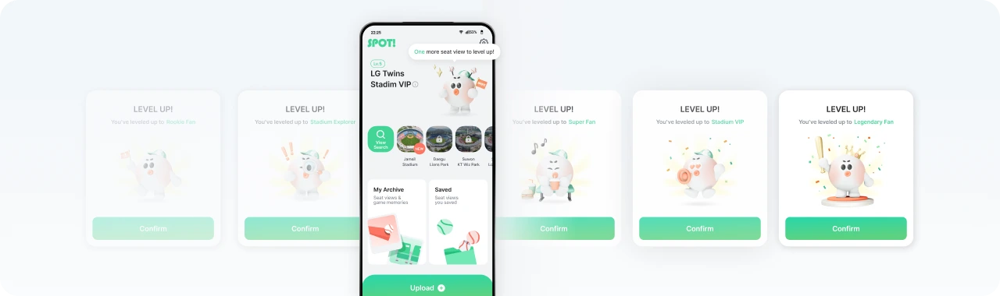
Korean baseball attendance surpassed 10 million in 2024, up 43% from 2023. But with an average of 20,800 seats per stadium, and preferences that varied by who fans came with and how they watched, choosing a seat was difficult. With SPOT, fans use others’ reviews to see seats before a game. Afterward, they share their own views and keep a game-day journal.
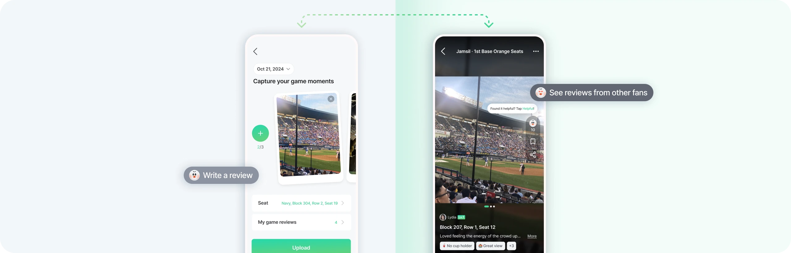
In a survey of 252 fans, most checked seat views before a game. But reviews and photos were scattered across blogs, social media, and official sites, in different formats.
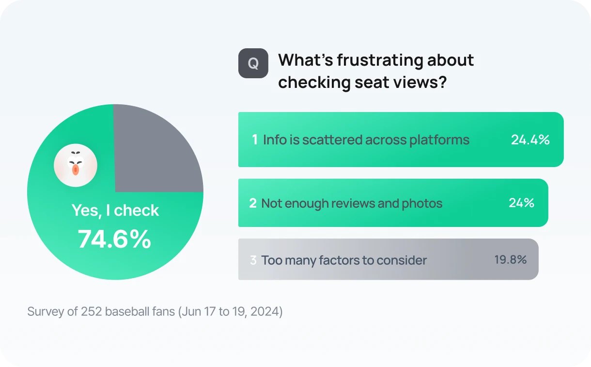
To understand why, we interviewed six frequent and casual fans. All of them read several seat-view reviews before a game, but none had ever written one. They had experiences worth sharing, but felt uncomfortable posting them publicly.
Interviews revealed two causes behind the problem.
Most users wanted both in one place. Photos show the view at a glance, and text adds what photos miss, like weather, sunlight, and crowd energy. But they had to piece the two together across platforms.
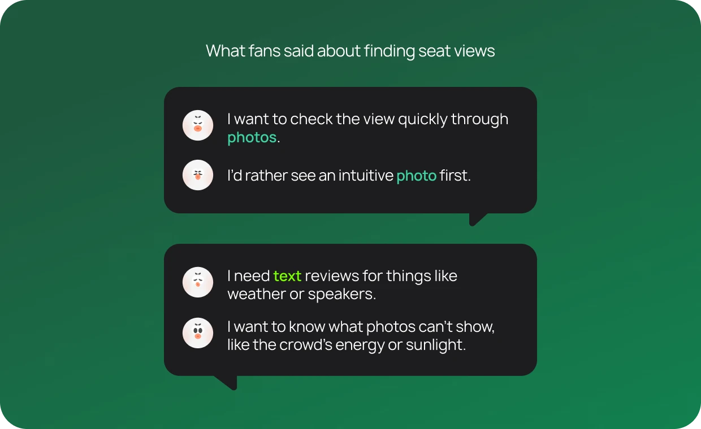
In follow-up interviews, all six participants, both frequent and casual fans, said a clear reward would make them more willing to write reviews.
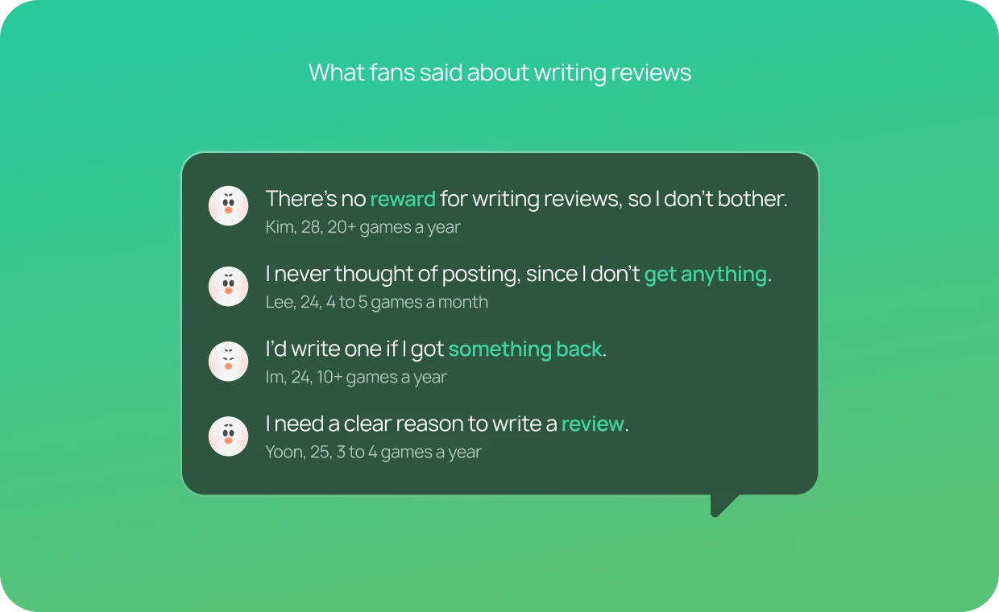
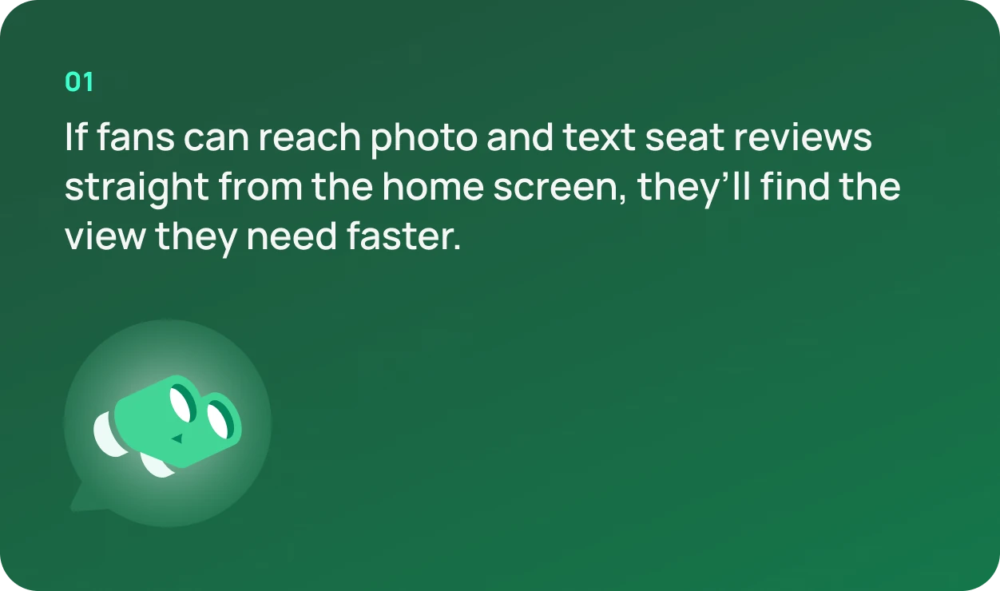
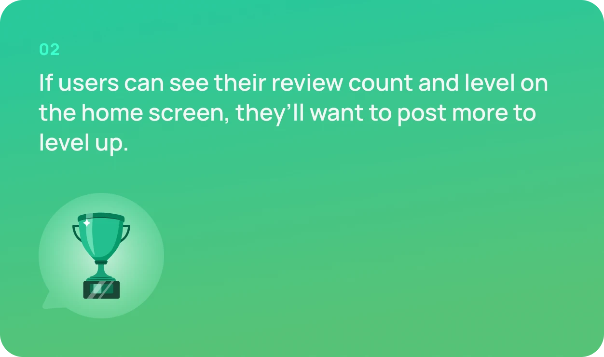
Using a Maze prototype, I observed how fans used the home screen and asked follow-up questions.
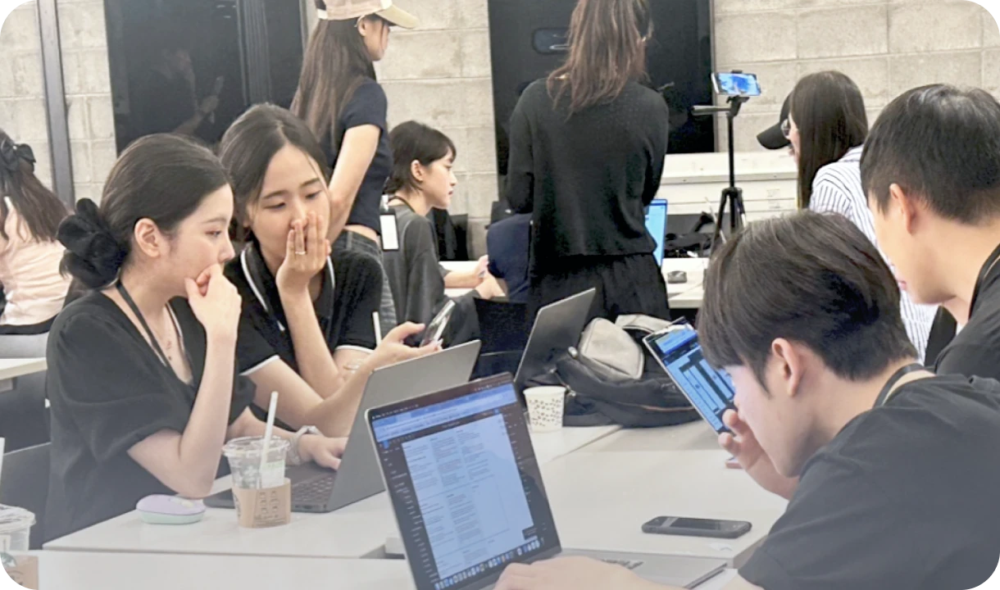
Since finding seat views was users’ top need, I gave two ways to reach it from home, a button at the top and a tab at the bottom, and asked fans to find a seat they wanted. More entry points didn’t help: users only noticed the button that stood out.
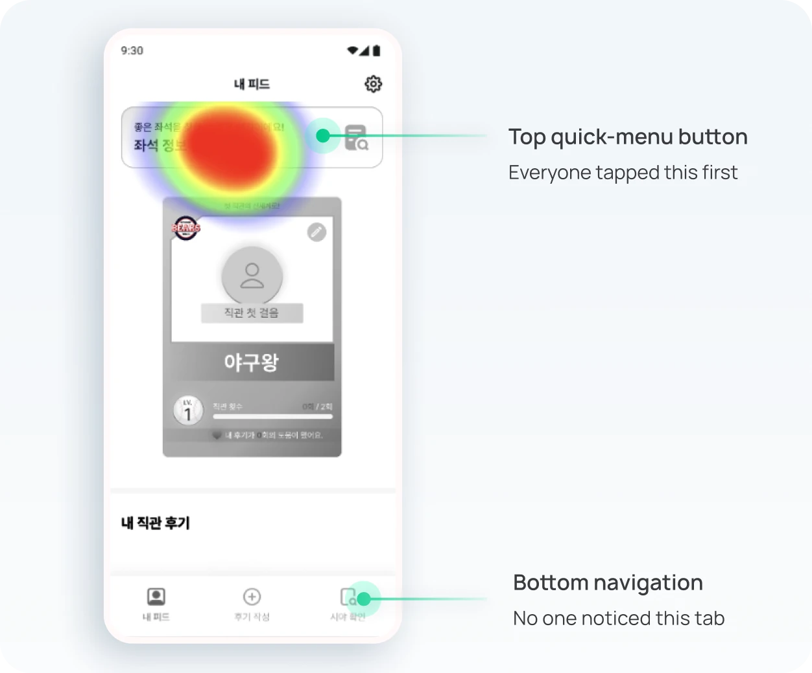
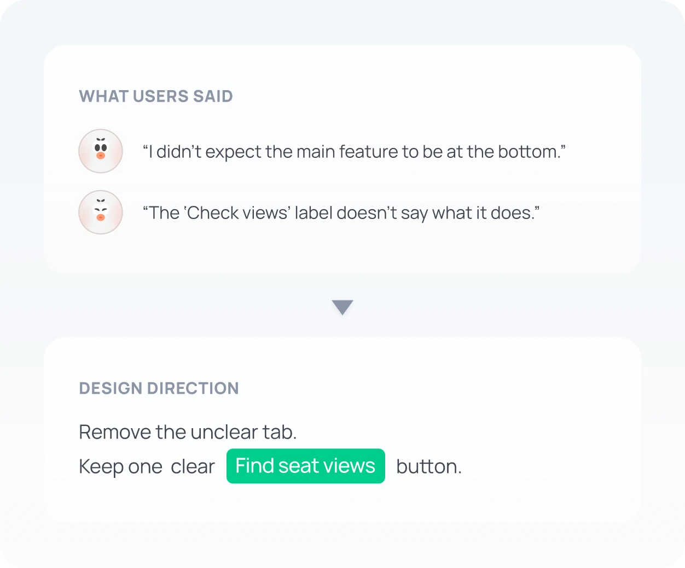
I showed three profile concepts inspired by KBO baseball cards, tickets, and membership cards, and asked whether leveling would motivate them to write reviews. Users understood the levels, but wanted a reward they could actually see and feel, not just a changing number.
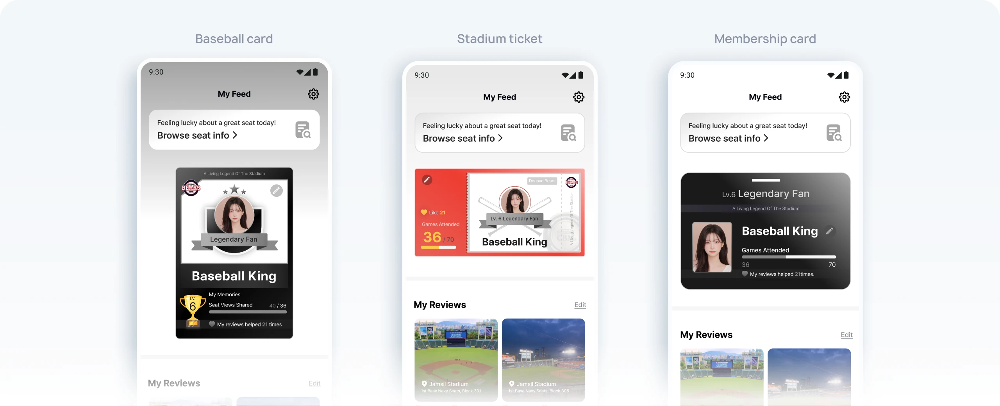
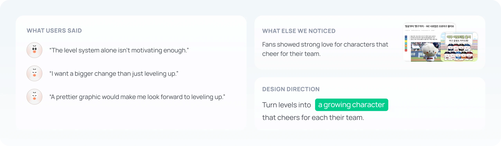
No one used the bottom tab in testing, so I removed it and made the top button the only way in. I also renamed it from “Check views” to “Find seat views” so users know what it does before tapping.
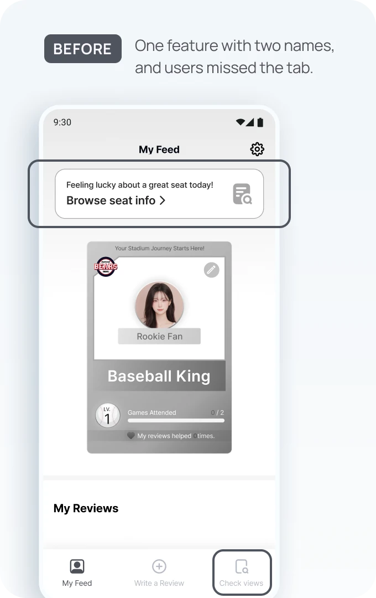
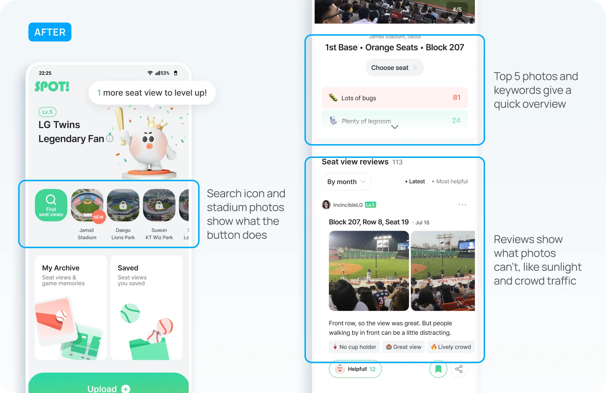
Users understood the levels, but a number didn’t feel like a reward. Since fans already love their team’s mascots, I turned each level into a character that grows and cheers for their team.
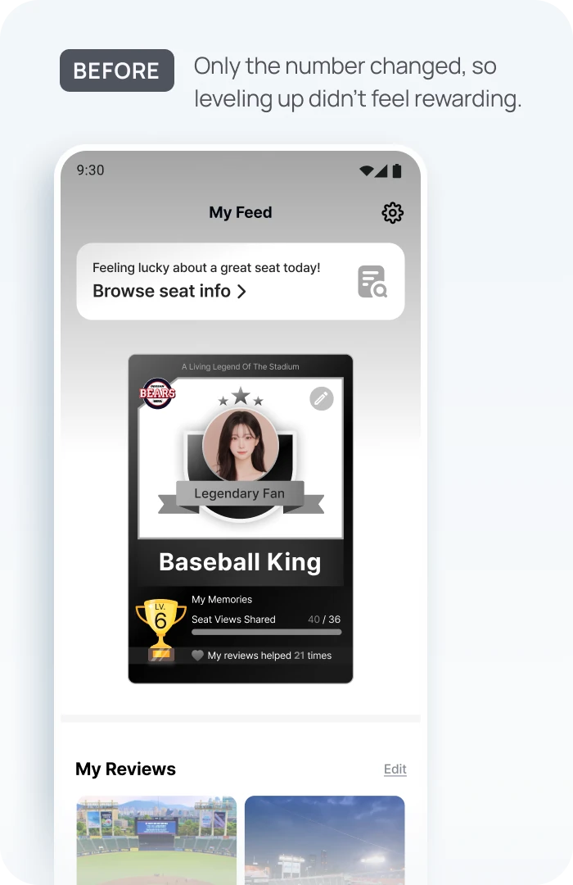
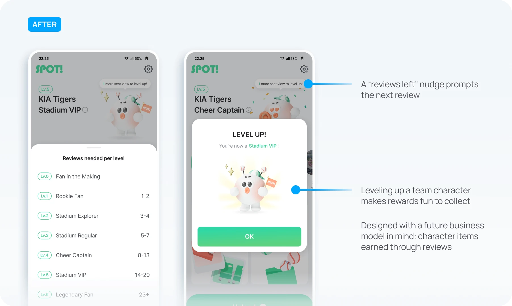
Measured with Mixpanel and Google Analytics one month after launch
Faster access to seat views
5x
31→6 sec
One clear button on the home screen took users straight to the core feature.
More reviews written
8.2x
45→372 reviews
The growing character gave fans a reason to share. Users said they wanted to keep watching it level up.
Awards and recognition
Grand Prize
4.46 / 5 user satisfaction
Won the Grand Prize at DEPROMEET, ranked #1 Trending Product on an IT platform, and got featured on Behance’s UI/UX gallery.
On a zero-to-one product, removing the tab and building a 3D character meant putting other features on hold. But interviews and testing kept pointing to the same two problems, finding seat views and a lack of reasons to share, so I spent two weeks on just those.
Through the baseball season, I kept testing with fans who regularly attend games and refined the design until launch. The result was an experience fans shared on their own. Next time, I’ll keep using research and data, not assumptions, to decide where effort goes.
Fans responded well to the growing character, so the next step is character items they can buy or unlock by writing reviews. Before building them, I’d test which rewards fans want and whether they’d actually pay.


Rebuilt the site with AI in 4 days, cutting page size by 94%, reducing bounce by 2.6×, and establishing an AI workflow adopted across the organization.


Create your own AI appearance


Redesigned Interaction Mode to make it easier to discover and sustain AI conversations, increasing entry by 5× and average conversation time by 5.5×.